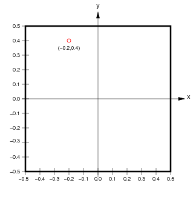
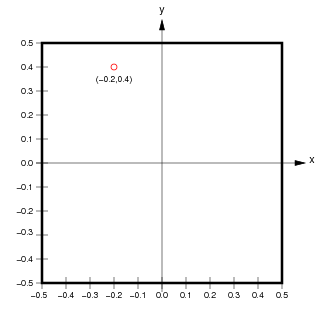
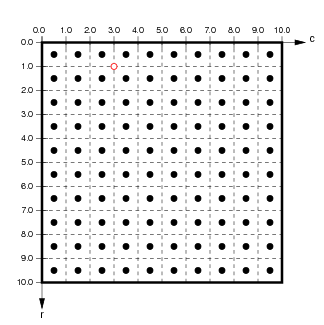

ImaGen spatial coordinate systems¶
ImaGen supports resolution-independent specification and generation of input patterns. To achieve this, ImaGen provides multiple spatial coordinate systems, called Sheet and matrix coordinates.
Sheet coordinates¶
User-accessible quantities are always expressed in Sheet coordinates, which are resolution independent. An ImaGen SheetCoordinateSystem is a rectangularly bounded region of a continuous two-dimensional plane. The default SheetCoordinateSystem has a square area of 1.0 centered at (0.0,0.0):

Locations in a SheetCoordinateSystem are specified using floating-point Sheet coordinates (x,y) contained within the SheetCoordinateSystem’s BoundingBox. The thick black line in the figure above shows the BoundingBox of the default SheetCoordinateSystem, which extends from (-0.5,-0.5) to (0.5,0.5) in Sheet coordinates. Any coordinate within the BoundingBox is a valid Sheet coordinate.
Image coordinates¶
Although users primarily manipulate the abstract, continuous SheetCoordinateSystem, the actual output from a PatternGenerator is a finite matrix that regularly samples this continuous space. Each SheetCoordinateSystem has a parameter called its density, which specifies how many units (matrix elements) in the matrix correspond to a unit length in Sheet coordinates. For instance, the default SheetCoordinateSystem above with a density of 5 corresponds to the matrix on the left below:
 

Here, the 1.0x1.0 area of Sheet coordinates is represented by a 5x5 matrix, whose BoundingBox (represented by a thick black outline) corresponds exactly to the BoundingBox of the Sheet to which it belongs. Each floating-point location (x,y) in Sheet coordinates corresponds uniquely to a floating-point location (r,c) in floating-point matrix coordinates, and vice versa. Individual units or elements in this array are accessed using integer matrix index coordinates, which can be calculated from the matrix coordinate (r,c) as (floor(int(r)),floor(int(c))).
For the example shown, the center of the unit with matrix index (0,1) is at location (0.5,1.5) in matrix coordinates and (-0.2,0.4) in Sheet coordinates. Notice that matrix and matrix index coordinates start at (0.0,0.0) in the upper left and increase down and to the right (as is the accepted convention for matrices), while Sheet coordinates start at the center and increase up and to the right (as is the accepted convention for Cartesian coordinates).
The reason for having multiple sets of coordinates is that the same SheetCoordinateSystem can at another time yield a different matrix specified by a different density. For instance, if this SheetCoordinateSystem had a density of 10 instead, the corresponding matrix would be:

Using this higher density, Sheet coordinate (-0.2,0.4) now corresponds to the matrix coordinate (1.0,3.0). As long as the user interface specifies all units in Sheet coordinates and converts these to matrix coordinates appropriately, the user can use different densities at different times without changing any other parameters.
Technical details¶
In some cases, the details of representing a SheetCoordinateSystem with a matrix of a certain density can be more complex than described above, because it is possible to specify a bounds and density combination that cannot be realized exactly. For this reason, the quantities set by the user are called nominal_density and nominal_bounds, and the true bounds and density are calculated from these.
For instance, consider requesting that a SheetCoordinateSystem have bounds of BoundingBox(radius=0.3), and density of 7. Such an area (a 0.6 x 0.6 square) cannot be tiled exactly by 7 units per 1.0 length. When such a SheetCoordinateSystem is created, the density will be adjusted so that the requested sheet bounds (and thus the overall area) is respected. In this example, the SheetCoordinateSystem would have an actual density of 6.67 (the closest value to tile the plane exactly; see SheetCoordinateSystem). This approach was chosen so that whenever the density is changed, the matrix remains the best possible approximation of the requested area.
In summary, the bounds specified for a SheetCoordinateSystem are respected, but the density may be adjusted so that the plane is tiled exactly.